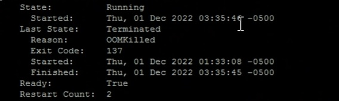

Go, also known as Golang, is a programming language designed for simplicity and efficiency. One of the language's standout features is its built-in support for profiling through the pprof package. Profiling is a crucial aspect of optimizing and understanding the performance of your Go applications. In this blog post, we'll dive into the world of pprof, exploring what it is and how you can leverage it to identify bottlenecks and optimize your Go code.
Pprof, short for "performance profile," is a powerful tool included in the Go standard library that allows developers to profile and analyze the runtime behavior of their applications. It provides insights into CPU usage, memory allocation, and other performance-related metrics. Go's pprof package is incredibly versatile, offering both in-depth analysis and an easy-to-use interface.
Have you ever wondered why your application might be experiencing memory leaks or faced the perplexing mystery of Kubernetes showing an "OOMKilled" message? By using pprof, you will have a better understanding of the runtime behavior of the applications. This allows optimization for resources and enhance overall performance stability of the application.
curl http://localhost:3000/pprof-example to start the application.ab -n 1000 -c 10 http://localhost:3000/pprof-example
go tool pprof http://localhost:8080/debug/pprof/heap in another terminal window to start the pprof session.
// Here are some of the commands for pprof
- top: //shows the functions that allocates the most memory
- list: //return the source code for a specific function. Eg, list pprofExample
- web: //opens a web browser, showing a graph of the memory allocation and function calls
topcommand to see the highest usage.net/http.Header.Clone uses the highest consumption at 512.17kB with 33.34% of the total applicationweb command to see with a graphical imagego tool pprof -inuse_space http://localhost:8080/debug/pprof/heap
inuse_space: Amount of memory allocated and not released yet (Important).
inuse_objects: Amount of objects allocated and not released yet.
alloc_space: Total amount of memory allocated (regardless of released).
alloc_objects: Total amount of objects allocated (regardless of released).